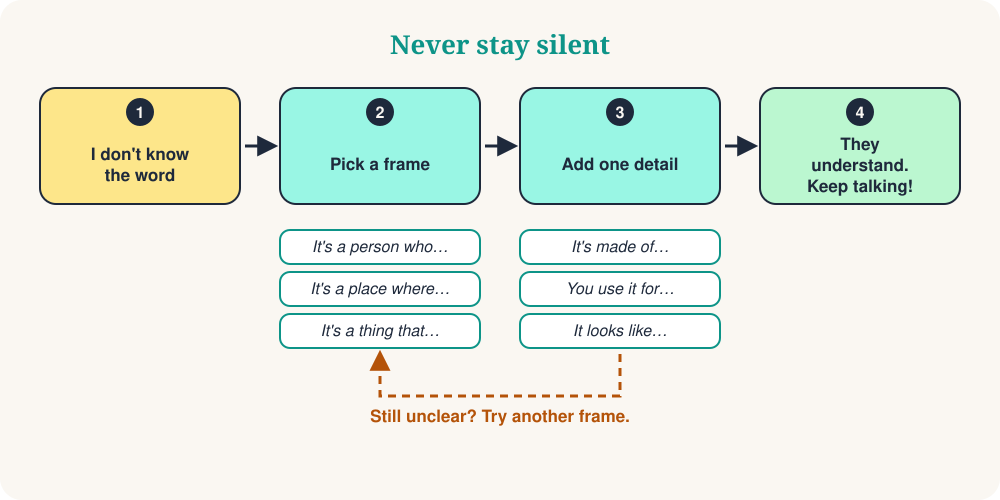

You're at a market. You want to ask for a charger, and the word has vanished. Your brain says: translate it! But there is a better way. Don't search for the missing word. Describe it.
This is a real skill, and native speakers use it too. With 10 short sentence frames you can describe a person, a place, an object or a moment, and the other person usually gives you the word. Then you just keep talking.

The 10 sentence frames
Learn the frame, not the word. Read the example aloud, then try the same frame with a new word.
| # | Frame | Example | Helps you describe |
|---|---|---|---|
| 1 | It's a person who… | It's a person who teaches children. | a person (a teacher) |
| 2 | It's a place where… | It's a place where people buy food. | a place (a market) |
| 3 | It's a thing that… | It's a thing that tells the time. | an object (a clock) |
| 4 | It's something you use to… | It's something you use to write. | a tool (a pen) |
| 5 | It's a time when… | It's a time when people sleep. | a moment (night) |
| 6 | It's a day when… | It's a day when people celebrate. | a special day (a holiday) |
| 7 | For example… | I like sports. For example, football and tennis. | an idea: give examples |
| 8 | It means… | 'Huge' means very big. | a word: use simpler words |
| 9 | It looks like… | It looks like a small computer. | appearance: compare it |
| 10 | How do you say… in English? | How do you say this in English? | any word: ask for help |
See it in real life
The waiter smiles and brings you a pen.
Context: At a café, you want to sign a bill.
Your listener says: “The market? It's two streets away.”
Context: In a new city, you look for the market.
Your friend laughs: “A banana!”
Context: At a party, you forgot the word.
10 survival phrases
These are small add-ons. Put them after a frame to give more detail.
| # | Phrase | Example |
|---|---|---|
| 1 | It's a kind of… | It's a kind of animal. |
| 2 | It's made of… | It's made of wood or metal. |
| 3 | You use it for… | You use it for travelling. |
| 4 | It's the opposite of… | It's the opposite of expensive. |
| 5 | It sounds like… | It sounds like music. |
| 6 | It has… | It has four wheels. |
| 7 | It is similar to… | It is similar to a car. |
| 8 | It comes from… | It comes from Italy. |
| 9 | I don't know the word, but… | I don't know the word, but it's for cooking. |
| 10 | Can you repeat that, please? | Sorry, could you say that again more slowly? |
The 3-step method
Let's describe an umbrella without saying the word:
- Category: It's a thing that protects you.
- Function: You use it when it rains.
- Detail: It looks like a small roof.
Three short sentences. The listener says “An umbrella!” and the conversation continues.
Avoid these 4 traps
Quick quiz
❓ You forget the word for “bakery”. Which sentence works best?
“It's a place where…” is the perfect frame for places. The listener hears bread and a shop: a bakery!
❓ Which sentence describes “scissors”?
Scissors are a tool, so use “It's something you use to…”.
❓ A friend says: “It's the opposite of expensive.” What is the word?
The opposite of expensive is cheap. Great way to explain adjectives!
Your 5-minute practice
- Look around you and choose 5 objects.
- Describe each one with one frame, without saying its name.
- Add one survival phrase to the two most difficult ones.
- Record yourself on your phone and listen to your voice.
- Tomorrow, repeat with 5 new objects.
Summary
Fluency is not about knowing every word. It's about never staying silent. Learn the frames, add one detail, and keep talking.
“Describe it. Don't translate it.”